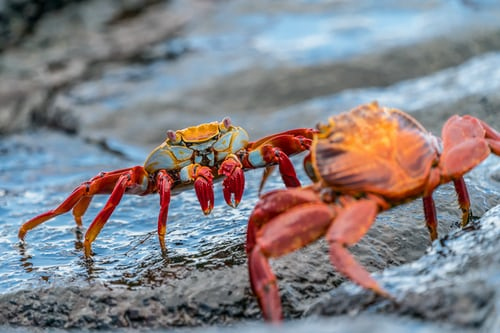

Crabs
July 7, 2020 11:00pm IST It’s a short tailed member of the crustacean order decapoda (phylum arthropoda) especially the brachyurans or true crabs, but also other forms such as anomurans which include hermit crabs.
Ecology
Most crabs live in the sea, even the land crabs, which are abundant in tropical countries, usually visit the sea occasionally and pass through their early stages in it.
Walking Pattern
Crabs typically walk sideways, because of the articulation of the legs which makes a sidelong gait more efficient . however, some crabs walk forwards or backwards . some crabs are also capable of swimming.
Sexual Dimorphism
Crabs often show marked sexual dimorphism . males often have larger claws, a tendency that is particularly pronounced in fiddler crabs. In males the abdomen is narrow and triangular in form , while females have a broader abdomen. This is because female crabs brood fertilized eggs.
Commercial Use
Many crabs are eaten by humans . some species are eaten whole, including the shell such as soft-shell crab, with other species just the claws or legs are eaten.
Pain
Crabs are often boiled alive. In 2005 scientists concluded that crustaceans could not feel pain. However another study , found that hermit crabs reacted to electric shocks.
Examples
- PEA CRABS: Lives within the shells of mussels and a variety of other mollusks, echinoderms and shares its host’s food.
- GIANT CRAB and TASMANIAN CRAB: 2 largest known crustaceans.
- HERMIT CRABS: Lives in empty shells discarded by gastropod mollusks. As the crab grows, it must find a larger shell to occupy . If the supply of empty shells of appropriate size is limited , competition for shells among hermit crabs can be severe.
- GHOST CRABSthey are scavengers and predators of small animals. The name derives from their nocturnality and their generally pale coloration.
- JAPENESE SPIDER CRAB: a species of marine crab that lives in the waters around japan. It has the largest leg span of any arthopod.
- COCONUT CRAB: it is the largest land living arthopod in the world, and is probably at the upper size limit for terrestrial animals with exoskeletons .
- RED KING CRAB: largest species of king crab. It was named after the color it turns when it is cooked rather than the color of a living animal, which tends to be more burgundy.
Author :
SUNANDA BISWAS
Related Articles
Crustaceans
July 7, 2020 11:20pm IST
Crustaceans form a large, diverse Subphylum of Phylum Arthropoda. This class includes some of the more familiar arthropods including Barnacles, Bopepods, Crabs, Prawns, Lobsters and wood lice. Despite such an extraordinary diversity of species many crustaceans have a similar structure...
Why Is Arthopods Conservation Important
July 7, 2020 7:30pm IST
To most of the people out there, cockroaches are already very revulsive and creepy organisms. After knowing the fact that it can live for several days without a head, it definitely makes one’s skin...
Insect : Our Tiny Saviours
July 7, 2020 8:50am IST
The world is full of different type of creatures and there size vary from few millimeters to some meters. Some organism attracts us towards them and some makes us afraid of them. But no matter what they are...